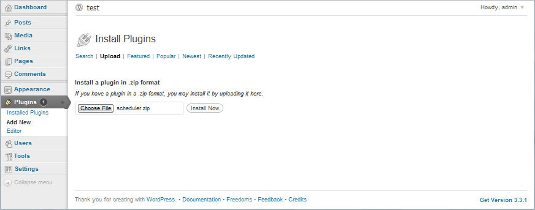
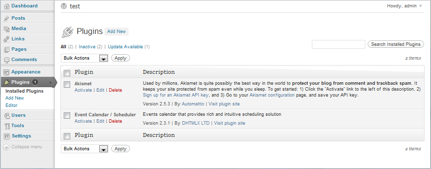
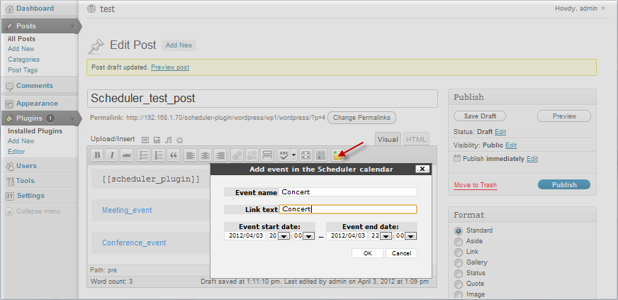
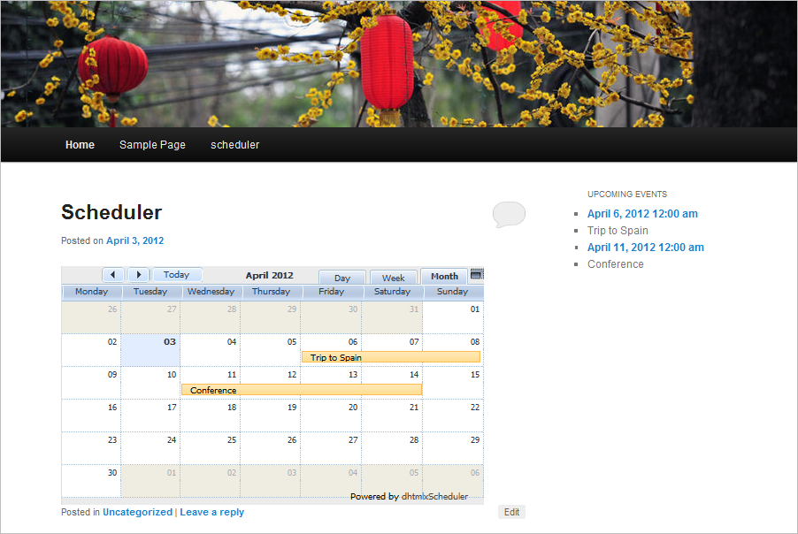

dhtmlxScheduler for the Wordpress
To use the Scheduler plugin in WordPress you should perform the following actions:
- ;
- ;
- .
Download links:
What's new? Version 3.0
The release 3.0 brought a number of new features to the Scheduler plugins: has fixed all bugs and problems detected since the previous version, improved the security aspects and added new configuration options.
New features:
- Import/Export to Google Calendar.
- 2 new available views: Week agenda and Map view.
- The possibility to hide columns in the Unit view.
- Special template providing the name of the event author.
- The possibility to show the second scale in the Timeline view.
- Skin styling. You can set any color scheme for your scheduler.
- Button Print to PDF. Now you needn't to add any additional files, just enable the related option on the control panel and the button invoking export will be added to the sheduler.
- Button Export to iCal. It also allows you to provide export with none extra files added.
Installing the plugin
WordPress offers the following way of adding the plugin to your page (the Google Chrome browser is used):
- Download the Scheduler package to your local machine as a zip file;
- From the Administration panel click on the Plugins tab;
- Select Add New;
- From the Workspace click on the Upload tab;
- From the tab click the button Choose file and choose the directory to your plugin package in the opened browse window;
- Click the button Install Now.

Activating the plugin
Once you have uploaded the plugin to your WordPress plugin directory, you should activate it from the Plugins Management page.
- From the Administration panel click on the Plugins tab;
- Select Plugins;
- To turn the plugin on, click Activate in the same row as the Scheduler plugin entry.

Using the plugin
Please note, the following users groups can edit Scheduler:
- Administrator;
- Editor.
To add Scheduler to a post or a page you should insert the appropriate Scheduler marker:
You can insert any text before [[scheduler_plugin]] or after scheduler instance
The plugin provides a special button in the workspace. It allows you to add events and place the links to them on the page.

Configuration
Scheduler can be configured through the admin panel available from the Plugin tab (the Scheduler entry). Read more on the topic in article Universal plugin control panel.
'Upcoming events' widget
The plugin provides a widget allowing you to present upcoming events on the page. You can get the widget from Appearance→Widgets→Upcoming events.
The appearance of the sidebar can be customizes by changing template sidebar.php placed in the package.
